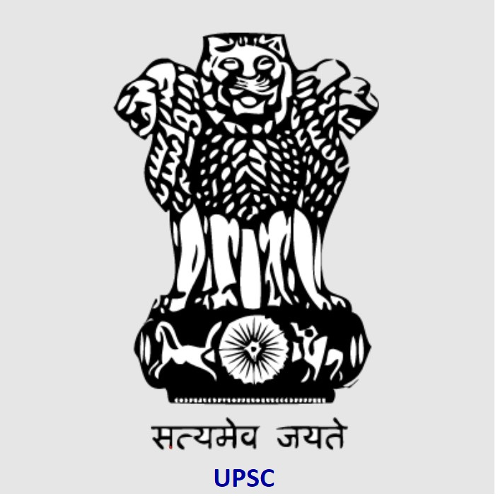

UPSC Recruitment 2022 | CAPF AC | Job Details | Age Limit | Educational Qualification | Apply Link | Freshers Job
Company Description: UPSC (UPSC full form United Public Service Commission) which is
responsible for Civil Service Exam is a Govt agency. UPSC conducts CAPF Central Armed
Police Forces (Assistant Commandants) Examination which will be on 07th August, 2022. For
more details look over the below content.

Name of the Examination: UPSC CAPF (AC) Examination 2022
As per UPSC age limit A candidate must have attained the age between 20 years to 25
years on 1st August, 2022 which means he/ she have been born not earlier than 2nd
August, 1997 and not later than 1st August, 2002.
UPSC Age limit is relaxable for reserved category candidates:
5 years for the SC & ST candidates
3 years for the OBC candidates
Educational Qualification: Candidates who have Bachelor's Degree from a disciplined and
any Government recognized university or any other institute as per an Act of Legislature can
apply for this job.
Last Date for Submission: The online application can be filled upto 10th May, 2022 till 06:00
PM. The Online Application can be withdrawn from 17.05.2022 to 23.05.2022 till 06:00 PM.
Apply Online: Click here for apply or for getting more details